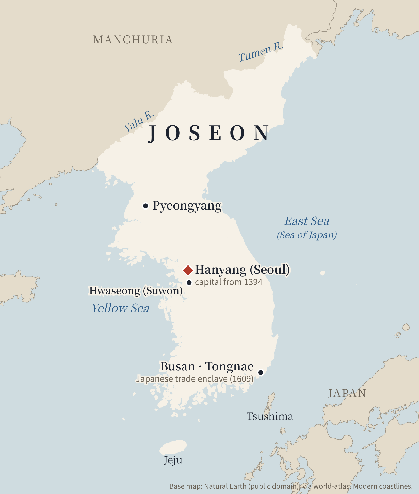
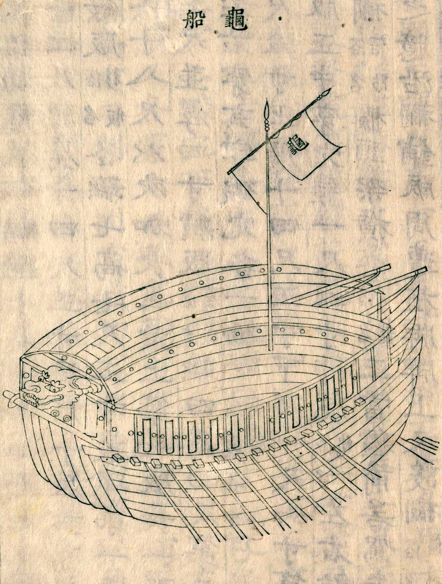

Unit I · Lecture 1
Joseon Korea
The Confucian State, 1392–1800
Ebrey & Walthall, Modern East Asia from 1600, Ch. 15 (pp. 247–264)
The big question
Given its flawed government and many crises, why did the dynasty last so long?
Politics
Did strong officials save Korea from tyranny?
The world
Why couldn't Joseon repel Hideyoshi?
Society
Why was so much labor unfree?
Ebrey & Walthall, Ch. 15, p. 247
Before 1600
From Goryeo to Joseon
1389
General Yi Seonggye removes his main rival
1392
Yi founds Joseon as King Taejo
1443
King Sejong's alphabet, hangul
1575
Permanent factions form at court
1592
Hideyoshi invades
A coup from within: relatively bloodless, and most great Goryeo families survived.
Ebrey & Walthall, Ch. 15, pp. 247–252

Geography
The kingdom of Joseon
Capital: Hanyang (Seoul)
North: borders pushed to the Yalu and Tumen rivers
Local rule: about 300 districts, each with a magistrate sent from the capital
Ebrey & Walthall, Ch. 15, pp. 248–250 · Map: Natural Earth base
Early Joseon
Three strong kings
Taejong
Builds the capital; takes Buddhist temple lands
Sejong
r. 1418–1450
Alphabet, science, law, the northern frontier
Sejo
r. 1455–1468
Seizes the throne; military reformer
Sejong's science: sundials · water clock · rain gauge (1442)
Ebrey & Walthall, Ch. 15, pp. 248–249
1443
Hangul: an alphabet for everyone

The 1446 book that explained the new script
Some consonants
ㄱ ㄴ ㄷ ㅁ ㅅ
Some vowels
ㅏ ㅓ ㅗ ㅜ ㅣ
Letters combine into syllables
ㅎ+ㅏ+ㄴ = 한
Ebrey & Walthall, Ch. 15, pp. 248, 262, 264 · Image: Hunminjeongeum Haerye (1446), public domain, via Wikimedia Commons
Kings and officials
Exams became the road to office
~30
men passed the exams per year, on average
Birth alone was no longer enough.
But most officials still came from old yangban families.
Officials could check the king through remonstrance.
Ebrey & Walthall, Ch. 15, pp. 249–252 · Material Culture: Yangban Children's Board Games
Social order
A layered, hereditary society
Yangban
office-holding elite
Jungin "middle people"
clerks, interpreters, accountants
Commoners
farmers, merchants, peddlers
Slaves
state and private · ~30% of people as late as 1750
Ebrey & Walthall, Ch. 15, pp. 250–251, 257
Neo-Confucian debate
Which comes first: principle or force?
Yi Toegye
Principle (i)
Holds all pure virtue, so it comes first
vs.
Yi Yulgok
Psychophysical force (ki)
Without it, the mind would not exist
Toegye's rejection of Wang Yangming set the tone for Korean Confucianism.
Ebrey & Walthall, Ch. 15, pp. 250–251
1575 onward
Factions become hereditary
Officials, 1575
Easterners
Westerners
c. 1589–1591
after 1659
Northerners
Southerners
Patriarchs
Disciples
Ebrey & Walthall, Ch. 15, pp. 252–256 · Northerner/Southerner split: Encyclopedia of Korean Culture, "Namin," "Bugin"

1592–1598
Hideyoshi invades
3 weeks
to take Seoul
~2 million
Korean lives lost
Ebrey & Walthall, Ch. 15, pp. 251–254

The one bright spot
Admiral Yi Sunsin's turtle ship
Iron
cladding, unprecedented
Spikes
hidden under straw mats
20 oars
ten a side, to escape pursuit
Cannon
shells of gunpowder and iron
"12 ships destroyed 400 in one month" — an undoubtedly exaggerated record
Ebrey & Walthall, Ch. 15, p. 254 · Image: turtle ship, 1795 woodblock, public domain (National Diet Library, via Wikimedia Commons)
Between Ming and Manchu
Caught between two giants
| Year | What happened |
|---|---|
| 1590s | Nurhaci unites the Jurchens, renames them Manchus |
| to 1623 | King Gwanghaegun tries to stay neutral |
| 1623 | Westerner coup puts Injo on the throne; pro-Ming policy |
| 1627 | 30,000 Manchus invade; treaty imposed |
| 1636 | 120,000 Manchus invade; Joseon becomes a Qing tributary |
| 1644 | Manchus conquer China; yangban stay loyal to the Ming |
Ebrey & Walthall, Ch. 15, pp. 254–255
Biography
Jeong Myeongsu, the interpreter
From captured soldier to power broker
1619
Captured by the Manchus; learns their language
1636
Both courts seek his advice
Next 8 years
Go-between at the Shenyang Residence
1650
Falls from power
Ebrey & Walthall, Ch. 15, Biography, p. 253
Palace politics, 1659–1800
The tragedy of Crown Prince Sado
"...in his father's presence, the prince grew inarticulate and hesitant out of fear and nervousness."
— Lady Hyegyeong, Sado's wife, writing in hangul in 1805
1749
Sado, 15, made prince regent
1762
King Yeongjo has him die in a rice chest
1795
His son, King Jeongjo, honors him
Ebrey & Walthall, Ch. 15, pp. 255–259 · Documents: Lady Hyegyeong's Memoirs (trans. JaHyon Kim Haboush, 1996)

1795
A son honors his father
6,000 men
King Jeongjo's procession to Sado's tomb, officially for his mother's 70th birthday
Look for the king's escort crossing the Han River on a bridge of boats.
Ebrey & Walthall, Ch. 15, p. 256 · Image: Royal Procession to Hwaseong, folding screen panel, 1795, public domain, via Wikimedia Commons
Economy, 1600s–1700s
Slow but real commercial growth
14M
people by 1810, up 40% from 1650
1654
coins accepted for taxes, first money in ~100 years
1791
monopolies cut to six Seoul shops
Still behind: in 1900, Korean farm yields per acre were about a third below Japan and China around 1880.
Ebrey & Walthall, Ch. 15, p. 257
Unfree labor
Slavery shrinks as commerce grows
Slaves as share of population
1750
~30%
1790
under 10%
Official (state) slaves
1590
350,000
1801
60,000
Main cause: runaways. Landlords found it cheaper to rent land to landless peasants than to chase them.
Ebrey & Walthall, Ch. 15, pp. 257–258 · bars drawn to scale within each chart

Culture, 1600s–1700s
A flowering of literature
Sijo & gasa
Men wrote in Chinese; women in Korean, using hangul
Chunhyang
Love and virtue triumph over a cruel governor
Nine Cloud Dream
Kim Manjung's Buddhist novel of worldly glory
Pansori
Popular songs and masked plays that mocked the yangban
Ebrey & Walthall, Ch. 15, pp. 255, 258–260 · Image: Jeong Seon, Geumgang jeondo, 1734, public domain, via Wikimedia Commons
Northern Learning
Learn from the Qing
Hong Daeyong
Beijing trip, 1765
China is not the only center of civilization
Pak Jiwon
tribute mission, 1780
Satirized the yangban; urged trade and better carts
Pak Jega
Northern Learning, 1788
Put able merchants in office; expand Qing trade
Limited impact: anti-Manchu prejudice and the bias against merchants ran too deep.
Ebrey & Walthall, Ch. 15, p. 260
Western Learning
Christianity arrives through books
1600s
Ricci's Chinese books on faith and science reach Korea
1653
Western calendar adopted
1784
Yi Seunghun brings texts home; first congregation forms
1791
Two Catholics burn ancestral tablets; executed
1794
First missionary, Zhou Wenmo, found and executed
Ebrey & Walthall, Ch. 15, pp. 260–261
Family and women
Confucianizing the Korean family
| Goryeo | Joseon, by 1700s | |
|---|---|---|
| Married couple lives | often with wife's family | with husband's family |
| Daughters inherit | equal shares | largely lost; nephews adopted |
| Widows | remarry freely | remarriage declines (1474 law) |
| Funerals | Buddhist; cremation | Confucian ancestor rites |
| Genealogies | women listed by birth order | women listed after brothers, unnamed |
Ebrey & Walthall, Ch. 15, pp. 247, 261–262
Making comparisons
Women in China, Korea and Japan
Shared
- Men could take concubines and divorce
- Male literacy far higher
- Status seen as declining over time
Korea's path
- Grew more patrilineal through Confucian zeal
- Hangul gave women a written voice
- Widow chastity, but no footbinding
Women were active agents too: shamans, household gods, Buddhist belief.
Ebrey & Walthall, Ch. 15, pp. 262, 264 (Making Comparisons: Women's Situations)
Conclusion
Korea in 1800 vs. 1392
Unchanged
Same dynasty
Kings still competing with the yangban
Transformed
Buddhism sidelined; family Confucianized
Coins, trade; slavery down sharply
Hereditary factions; more original thinkers
Back to the big question: why did Joseon last so long?
Ebrey & Walthall, Ch. 15, pp. 262–263 · Next: Lecture 2, The Qing (Ch. 16)
Sources & image credits
- Patricia Buckley Ebrey & Anne Walthall, Modern East Asia from 1600, 3rd ed. (Cengage, 2013), Ch. 15, pp. 247–264.
- Encyclopedia of Korean Culture (Academy of Korean Studies), entries “Namin” (Southerners) and “Bugin” (Northerners), Kim Seong-woo.
- Maps: drawn for this lecture on Natural Earth base data (public domain), via the world-atlas package.
- Hunminjeongeum Haerye (1446), public domain, Wikimedia Commons (Cultural Heritage Administration).
- Turtle ship, woodblock from Yi Chungmugong jeonseo (1795), public domain, National Diet Library, Wikimedia Commons.
- Jeong Seon, Geumgang jeondo (1734), public domain, Wikimedia Commons.
- Royal Procession to Hwaseong, folding-screen panel (1795), attributed to Kim Deuksin, public domain, Wikimedia Commons (Google Arts & Culture).